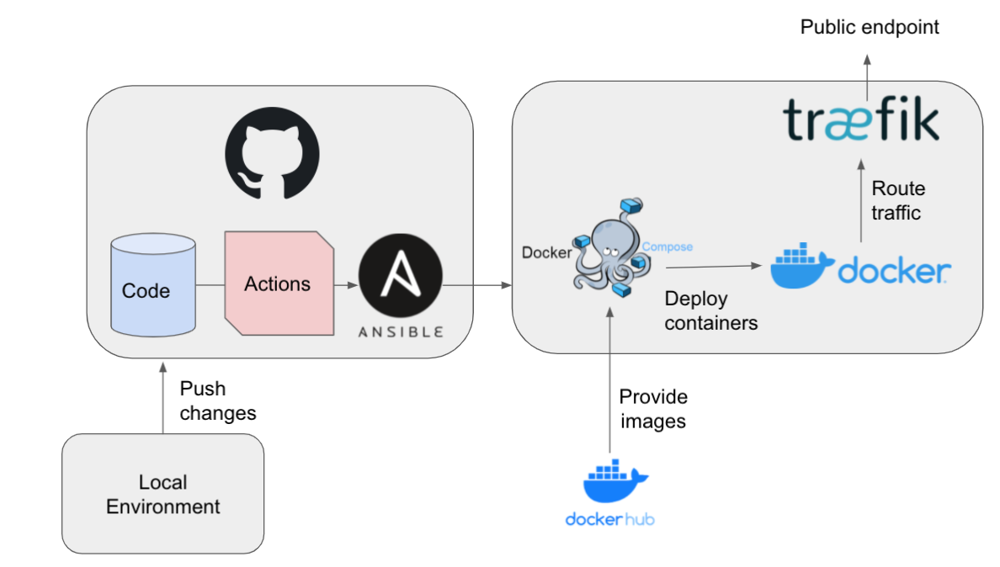
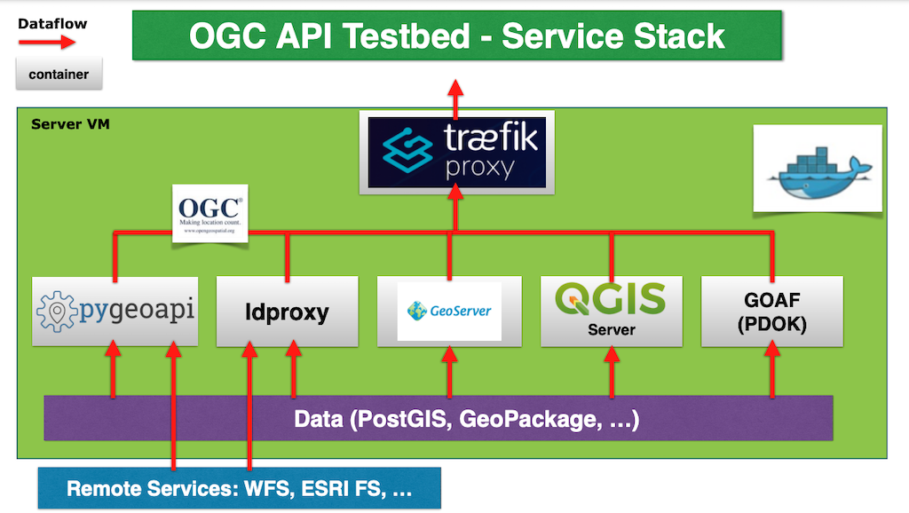

Platform setup
The project repository contains contains components to bootstrap, configure ("provision") and maintain a remote deployment of an OGC API web-service stack using modern "DevOps" tooling.

See also a presentation of the platform on OpenGeodag 2021.
Design Principles
The main design principles are:
- starting point is an empty VPS/VM with Ubuntu and root (key) access
- any action on the server/VM host is performed from a client host
- i.e. no direct access/login to/on the server/VM is required, only for problem solving
- remote actions can be performed manually or triggered by GitHub Workflows
- all credentials (passwords, SSH-keys, etc) are secured
- two operational stack instances 1) production, "Stable" and 2) playground, "Sandbox"
Components
The components used to realize this design are:
- Docker "...OS-level virtualization to deliver software in packages called containers..." (Wikipedia)
- Docker Compose "...a tool for defining and running multi-container Docker applications..."
- Ansible "...an open-source software provisioning tool" (Wikipedia)
- GitHub Actions/Workflows "...Automate, customize, and execute software development workflows in a GitHub repository..."
- Traefik a frontend proxy/load-balancer and SSL (HTTPS) endpoint.
The Docker-components are used to run the operational stack, i.e. the OGC API web-services and supporting services like for monitoring. Ansible is used to provision (bootstrap) both the server OS-software and the operational stack. Ansible is executed on a local client/desktop system to invoke operations on a remote server/VM. These operations are bundled in so-called Ansible Playbooks, YAML files that describe a desired server state. GitHub Actions are used to construct Workflows. These Actions will invoke these Ansible Playbooks, effectively configuring and provisioning the operational stack on a remote server/VM.
Security is guaranteed by the use of Ansible-Vault and GitHub Encrypted Secrets.
Traefik manages the routing of remote requests to relevant containers. Traefik listens to Docker Engine to be aware of available containers. Containers include a dedicated configuration which is picked up by traefik to enable the route.
Services
A number of services has been deployed within the platform, which can act as a template to add additional services. The image below shows the operational service stack with the Traefik frontend.

- pygeoapi - a Python server implementation of the OGC API suite of standards.
- pycsw - a Python server implementation of OGC API Records.
- GeoServer - a Java server implementation of the OGC API suite of standards.
- ldproxy - a Java server implementation of the OGC API suite of standards.
- QGIS Server - server component of QGIS with OGC OAFeat support.
- GOAF - OAF service developed in Go, maintained by PDOK.
- PostgreSQL/PostGIS - geospatial database
For administration, documentation and monitoring the following components are used:
- mkdocs for live documentation and landing pages
- PGAdmin - visual PostgreSQL manager
- GeoHealthCheck to monitor the availability, compliance and QoS of OGC web services
- Portainer visual Docker monitor and manager
Production and Sandbox Instance
Two separate server/CM-instances are managed to provide stable/production and sandbox/playground environments. As to control changes these instances are mapped to two GitHub repositories:
- https://github.com/Geonovum/ogc-api-testbed for the stable/production instance, nicknamed Stable
- https://github.com/Geonovum/ogc-api-sandbox the playground instance, nicknamed Sandbox
The Stable repo is a so called GitHub Template repo from which the Sandbox is cloned.
NB initally GitHub Protected Branches were considered, but it felt that those would be less transparent and even confusing for selective access and chances of mistakes.
Other Instances
When other instances are known they are added here.
EC JRC
The European Commission Joint Research Centre (EC JRC, Ispra It.) has also used the Template GitHub repo to create a server instance with OGC Data APIs: see their landing page at jrc.map5.nl and the GitHub repo at: https://github.com/justb4/ogc-api-jrc .
Selective Redeploy
When changes are pushed to the repo, only the affected services are redeployed. This is effected by a combination of GitHub Actions and Ansible Playbooks as follows:
- each Service has a dedicated GitHub Action "deploy" file, e.g. deploy.pygeoapi.yml
- the GitHub Action "deploy" file contains a trigger for a
pushwith apathsconstraint, in this example:
on:
push:
paths:
- 'services/pygeoapi/**'
- the GH Action then calls the Ansible Playbook deploy.yml with a
--tagsoption related to the Service, e.g.--tags pygeoapi - the deploy.yml will always update the GH repo on the server VM via the
pre_tasks - the Ansible task indicated by the
tagsis then executed
Security
Maintaining a public repository and providing secured access to services can be a challenge.
Complex solutions exist in the Docker space using Docker Secrets, /etcd service etc
We tried to keep it simpler, using Ansible Vault
and GitHub Secrets are the two main
mechanisms used for bootstrap and deploy.
The bootstrap.yml also applies various Linux hardening components like IP-blacklisting on multiple login attempt, key-only logine etc.
Steps and Workflows
Below is a shortened version how to setup and maintain a testbed server instance from zero. In a dedicated HOWTO all steps are expanded/described in very great detail.
Prerequisites
This is what you need to have available first.
Access to a server/VM
This implies acquiring a server/VM instance from a hosting provider. Main requirements are that server/VM runs an LTS Ubuntu (20.4 or better) and that SSL-keys are available for root access (or an admin user account with sudo-rights).
Python 3 and Ansible
You need a Python 3 installation and install Ansible and git (client).
Clone template repo
Clone from the template repo: https://github.com/Geonovum/ogc-api-testbed.git. See how to do this.
Setup Ansible
Adapt the files under git/ansible/vars, following the README there.
Adapt the inventory file under git/ansible/hosts, following the README there.
Bootstrap the server/VM
"Bootstrap" here implies the complete provisioning of a remote server/VM that runs the operational service stack. This is a one-time manual action, but can be executed at any time as Ansible actions are idempotent. By its nature, Ansible tasks will only change the system if there is something to do.
Startpoint is a fresh Ubuntu-server or VM with root access via SSH-keys (no passwords). The Ansible playbook bootstrap.yml installs the neccessary software, and hardens the server security, e.g. using fail2ban. In this step Docker and Docker Compose are installed and a Linux systemd service is run that automatically starts/stops the operational stack, also on reboots. The software for the operational stack, i.e. from this repo, is cloned on the server as well.
Maintain the server/VM
This step is the daily operational maintenance. The basic substeps are:
- make a change, e.g. add a data Collection to an OGC API OAFeat service
- commit/push the change to GitHub
- watch the triggered GitHub Actions, check for any errors
- observe changes via website
As indicated, a dedicated HOWTO describes the above steps in very great detail.